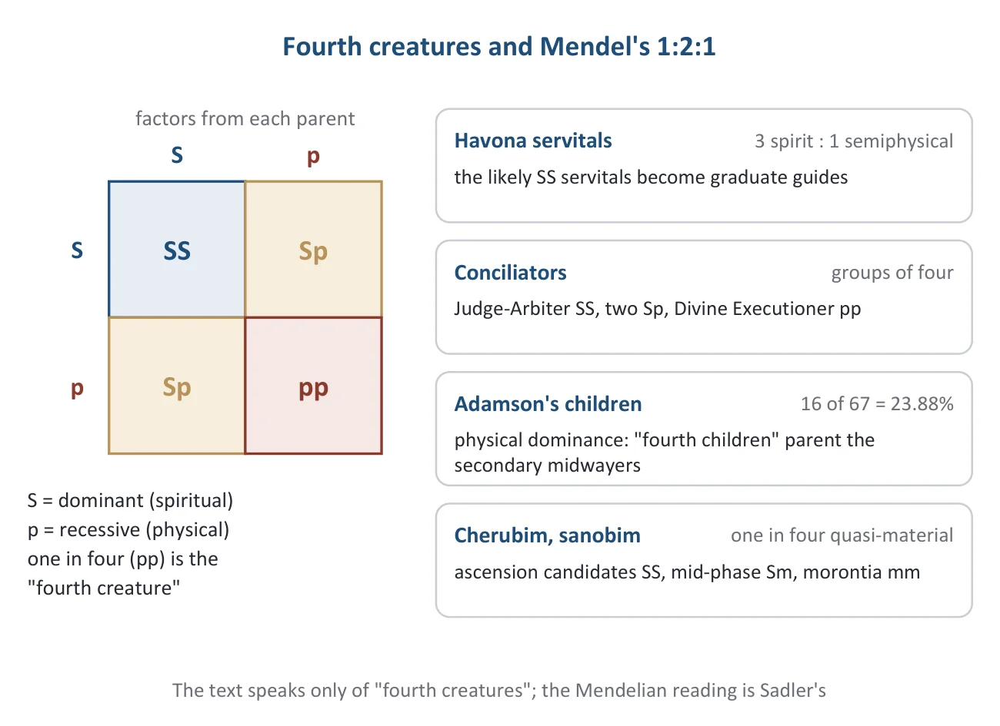

Técnicas de transformación
Original: Apéndice VIII, Técnicas transformadoras (pp. 249–292)
EN ESTE CAPÍTULO
Si el Apéndice VII siguió el camino por el que madura el potencial, el Apéndice VIII examina las diversas maneras en que el potencial madurado se convierte en ser actual: creación, trinidización, eventuación, fragmentación, evolución, personalización emergente y el abrazo de la Deidad. Sadler busca en el texto el alcance y los límites de cada técnica y las compara, subrayando que lo creado comienza desde un estado que se le ha dado, mientras que lo que evoluciona lo gana todo por sí mismo. Termina con una audaz nota a pie de página que interpreta el fenómeno de las «cuartas criaturas» mediante la proporción de la herencia de Mendel.
1. Los muchos caminos de lo potencial a lo actual (orig., p. 249)
Quienes vivimos en un mundo evolutivo estamos acostumbrados al contraste entre la creación instantánea y la evolución lenta. Sin embargo, no son estos los únicos caminos por los que los seres y las cosas pasan de lo potencial a lo actual. El libro de Urantia dice que un mismo Dios actúa de tres maneras distintas.
Dios, como superpersona, eventúa; Dios, como persona, crea; Dios, como prepersona, fragmenta;30:1.99
Hay que añadir varias técnicas más. Los creadores y ciertas criaturas pueden trinidizar nuevos seres. En el universo local evolucionan tanto los creadores como las criaturas. El Espíritu Creativo es un ser singular, la focalización en el universo local del Espíritu Infinito en vías de hacerse personal; y las criaturas que reciben un abrazo de la Deidad pueden experimentar un cambio de estado. Sadler reúne todo esto bajo el epígrafe de técnicas transformadoras. Lo que llega a existir nunca surge de la nada; siempre es potencial que ha sido transformado.

2. La técnica de la creación (orig., pp. 250–260)
La creatividad en el Paraíso y la creatividad en el tiempo y el espacio
Sadler comienza con una advertencia sobre la creación. Un procedimiento que es normal en el tiempo y el espacio no tiene por qué valer en Havona, y menos aún en el Paraíso. El libro de Urantia no trata la condición de creador como un atributo divino más entre otros.
La facultad de crear no es en rigor un atributo de Dios; es más bien el agregado de su naturaleza actuante.3:0.3
Sadler entiende aquí la condición de creador en un sentido amplio, que abarca toda manera de traer algo a la existencia. Al notar que el texto pone juntos a seres que son «trinidizados, creados, eventuados, o eternizados» [13:1.12], conjetura que «eternizados» puede referirse a un acto supercreativo de la Deidad del Paraíso.
Sobre la creación en el tiempo y el espacio el texto es mucho más específico. Cuando la Trinidad del Paraíso activa los potenciales estáticos, la Ultimidad de la Deidad transforma los «potenciales no diferenciados» en planes segregados y bien definidos, y estos planes quedan bajo la supervisión de los Arquitectos Maestros [118:4.6]. En la última etapa, los seres finitos se hacen a partir del potencial del Supremo. Los organizadores de fuerza transforman la fuerza espacial en energía, los directores del poder transforman la energía en materia, y los Portadores de Vida inician los cambios de la vida en la materia inerte [42:1.5]. Los Creadores Supremos hacen el mismo tipo de trabajo con energías divinas superiores.
Los límites de la creatividad
¿Tiene límites el dominio de la creación? Sadler cree que sí. Su límite interior está allí donde Dios, como persona, entra en relaciones subinfinitas con otras personas. Su límite exterior es el «nivel creativo final» en el que funciona Dios el Último [0:2.17]. La creatividad en sentido estricto es subinfinita en cantidad y subabsoluta en calidad; opera solo dentro del ámbito de la realidad relativa.
Cuatro tipos de creación
Dentro de esos límites, Sadler distingue al menos cuatro clases de creatividad.
La primera es la creatividad ilimitada. El número de Hijos Creadores sigue aumentando, y los Espíritus Creativos siguen produciendo serafines sin fin. La segunda es la creatividad limitada por planes. A diferencia de los Hijos Creadores, las Uniones de los Días son de número fijo.
Ahora, sabemos que existen exactamente setecientos mil Uniones de los Días y no se están creando más.21:1.4
La razón no es que la Trinidad no pudiera hacer más. Un Unión de los Días para cada universo local encaja exactamente en el plan, y no hay necesidad de otros. Sadler considera que la mayoría de las órdenes de número fijo están limitadas precisamente de este modo, por una elección de sus creadores.
La tercera es la creatividad limitada por las circunstancias. Aquí el límite no está en la voluntad del creador, sino en la situación misma. Los Siete Espíritus Rectores son el caso clásico.
Si hubiese sido posible producir un número mayor de Espíritus Rectores, éstos habrían sido creados, pero tan sólo existían siete posibilidades asociativas, y sólo siete, inherentes en las tres Deidades.16:0.1
Ni siquiera las Deidades, observa Sadler, alteran las matemáticas. A la misma clase pertenecen la incapacidad del Hijo Eterno para transmitir a los Hijos Creadores el poder de hacer otro creador más [6:5.4], el número fijo de los Mensajeros Solitarios y la única Brillante Estrella Matutina de cada universo local.
Pero, tales Hijos, en unión con las Hijas del Espíritu Infinito, pueden crear solamente una Brillante Estrella Matutina en cada universo,33:4.2
Sadler conjetura que en cada universo local cierto potencial básico se agota con esa primera creación.
En este punto Sadler reúne a los «seres modelo y primogénitos»: el Micael primogénito, los ángeles modelo originales, Nambia, el primer Portador de Vida de Nebadon, Gavalia, la primera Estrella Vespertina, y otros. Su posición especial puede proceder de una diferencia en la naturaleza creada, o simplemente del hecho de haber sido los primeros. Grandfanda le sirve de contraste. Como primer mortal que llegó a Havona, Grandfanda probablemente no era distinto en naturaleza de otros ascendentes; encabeza el cuerpo de finalistas mortales simplemente porque llegó el primero. El primer Micael, en cambio, muy probablemente fue único desde el momento de su creación, y Sadler se inclina por esta opinión.
La cuarta es la creatividad refleja y reflexiva, en la que el acto de un creador suscita un acto creador dentro de otro. Sadler no está seguro de que ambas vayan juntas, pero da un ejemplo de cada una. En el momento en que el Padre Universal y el Hijo Eterno personalizan a un nuevo Hijo Creador, tiene lugar en el Espíritu Infinito una «reacción suprema de complemento», y se segrega el potencial de la futura consorte Espíritu [17:6.3]. Sadler encuentra en esta simultaneidad la razón por la que nuestro Micael es la personalización del concepto número 611.121 y el Espíritu Creativo de Salvington lleva el mismo número [33:1.1, 33:3.2]. Su ejemplo de creatividad reflexiva son los Conciliadores Universales. Cuando un Espíritu Rector crea mil servitales de Havona, el Espíritu Reflexivo que refleja a ese Espíritu Rector en cada superuniverso produce al instante mil conciliadores, siete mil en total [25:2.2].
La creación no es procreación
Sadler añade una nota a pie de página que traza una línea clara entre creación y procreación. Las únicas órdenes procreadoras nombradas en El libro de Urantia son los mortales, los Hijos Materiales y los seres intermedios. La creación es producción, el traer a la existencia algo nuevo; la procreación es reproducción, la repetición de la propia especie. La intención de un creador fija la naturaleza de un nuevo ser dentro de amplios límites, mientras que la intención de los padres procreadores solo determina que nacerá un hijo, no cuál será su naturaleza. En este sentido Sadler considera que el origen de los seres intermedios primarios y secundarios está cerca de la procreación. Cada pareja produjo mil intermedios primarios [77:1.5] o 248 intermedios secundarios [77:6.4] antes de que su capacidad se agotara, y toda su descendencia era de una sola clase. Lo que determinó la naturaleza de esa descendencia, sugiere Sadler, no fueron los padres, sino los planes de creadores superiores.
3. La técnica de la trinidización (orig., pp. 260–269)
En qué se diferencia la trinidización de la creación
La trinidización se parece a la creación en que da origen a nuevos seres. Sadler ve, no obstante, al menos dos diferencias. La creación no es ningún secreto, pero la trinidización está entre los secretos de Vicegerington y de Solitarington [13:1.12]. Y mientras que la creación está confinada a niveles subabsolutos, la trinidización no lo está, pues el Espíritu Infinito, que apareció mediante la primera trinidización, se halla como igual junto al Padre y al Hijo.
Sadler encuentra la palabra «trinidización» usada en tres sentidos en el texto: el abrazo de la Trinidad, la trinidización ilimitada y la trinidización limitada.
El abrazo de la Trinidad
El texto llama también trinidización al acto en que la Trinidad del Paraíso abraza a determinadas criaturas. Los Hijos Trinidizados de Logro, de Selección y de Perfección surgen de este modo y son asignados a los gobiernos superuniversales. El abrazo eleva el estado, pero fija el crecimiento.
porque el abrazo de la Trinidad parece precipitar de la corriente del tiempo futuro muchos de los potenciales no alcanzados de las criaturas.22:4.5
Como una sustancia disuelta que se precipita fuera de una solución, lo que algún día se habría alcanzado se solidifica de golpe en el presente. En términos de Sadler, el finalista abrazado recibe por adelantado lo que con el tiempo habría obtenido como espíritu de la séptima etapa [40:10.12].
Trinidización ilimitada y limitada
La diferencia entre los dos sentidos restantes se aprecia con claridad en una tabla.
| Aspecto | Creación | Trinidización ilimitada | Trinidización limitada |
|---|---|---|---|
| Quién actúa | Un creador | Las Deidades del Paraíso (dos o tres) | El Padre y el Hijo; dos criaturas calificadas |
| Efecto en los progenitores | Ninguno | Ninguno | Los progenitores se vuelven de algún modo uno |
| Estado de la descendencia | Inferior al creador | No igual a los progenitores | Igual en estado a los progenitores |
| Repetición | Posible | Sin límite | Una sola vez |
Las criaturas glorificadas que se ocupan de tales aventuras de trinidización sólo pueden participar en una de tales experiencias, mientras que las Deidades del Paraíso no parecen tener límites a la actuación continuada de episodios de trinidización.22:7.3
Sadler cree que los Hijos no revelados trinidizados por la Deidad surgieron por trinidización ilimitada. Señala también que el texto a veces usa la palabra en sentido laxo, casi como sinónimo de creación, como cuando dice que todos los Ancianos de los Días fueron trinidizados al mismo tiempo [18:3.4].
El prototipo de la trinidización limitada es el origen del Espíritu Infinito. Después de ese acontecimiento el Padre y el Hijo se hicieron uno como el Padre-Hijo; el Espíritu Infinito es una Deidad igual a Ellos; y no puede haber un segundo Espíritu Infinito. Sadler piensa este primer acontecimiento en tres pasos —dualización, trinidización y formación de la Trinidad—, pero sostiene que el orden es solo conceptual: de hecho los tres ocurrieron juntos, y en ningún momento estuvo dividida la Deidad. Llevado hacia abajo en la escala, el mismo principio se lee así. Cuando dos Deidades infinitas trinidizan, aparece una tercera Deidad infinita. Cuando dos creadores subinfinitos trinidizan, resultaría un tercer creador subinfinito. El texto solo recoge la opinión de que en edades futuras puede producirse una unión más estrecha entre un Hijo Creador y una Ministra Divina [56:7.7]; Sadler lo lee como una trinidización por dos creadores. Y cuando dos criaturas trinidizan, resulta una tercera criatura.
El alcance temporal de la trinidización por criaturas
Aquí Sadler advierte una inversión intrigante. Un Hijo Creador maneja el potencial con mucha mayor profundidad y amplitud que cualquier pareja de criaturas. Sin embargo, en el eje de las edades está más estrechamente limitado, pues al convertirse en Hijo Mayor renuncia al poder de crear tipos enteramente nuevos de criaturas en la presente edad universal [21:5.6]. La trinidización por criaturas, en cambio, no está atada a las necesidades de la edad presente. Trae a la actualidad, anticipadamente, potenciales del Supremo aún no realizados, y su propósito parece ser la preparación para las edades futuras.
Sadler divide a los hijos trinidizados por criaturas en dos grupos. Los Hijos trinidizados por ascendentes encarnan potenciales espirituales del Supremo Todopoderoso, y los Hijos Trinidizados por Paraíso-Havona los del Supremo, por lo que ambos grupos son hijos «post-supremos». Sirven en los circuitos interiores de Havona, en los mundos paradisiacos del Espíritu Infinito y en los universos locales, y más adelante trabajarán como Cuerpo de los Finalistas Trinidizados en el espacio exterior o se reunirán en las sedes centrales de los superuniversos al cierre de esta edad. Los Hijos Trinidizados de Destino, trinidizados conjuntamente por un finalista y un habitante del Paraíso-Havona, encarnan la Mente Suprema-Última y son por tanto hijos «post-últimos» [22:7.14]. No pueden servir en los universos presentes; se retiran a Vicegerington bajo la custodia de los Arquitectos del Universo Maestro. La conclusión de Sadler es que las creaciones de los creadores se ajustan a las necesidades de la edad presente, mientras que las trinidizaciones de las criaturas miran hacia las edades venideras.
4. La técnica de la eventuación (orig., pp. 269–274)
¿Por qué «eventuar»?
Eventuación es la palabra que se usa para la manera en que los Trascendentales llegan a existir. El texto dice que sus autores conocen su origen pero han recibido instrucciones de no revelarlo [31:9.2]; sin embargo, sí explica por qué se eligió esta palabra en particular.
Estos Trascendentales no crean ningún ser, tampoco fueron creados jamás. Al hablar de su origen, para evitar utilizar un nuevo término —una designación arbitraria y sin sentido— nos parece mejor decir que los Trascendentales simplemente se eventúan.31:8.3
Sadler razona que una palabra elegida precisamente para evitar la falta de sentido debe tener sentido, y consulta el significado de diccionario de «eventuate» (eventuar): acontecer al final, resultar. Su raíz, «event» (acontecimiento), designa en la teoría de la relatividad un suceso en un solo punto del espacio-tiempo. El uso del texto más cercano a este sentido es el siguiente.
Las relaciones existen entre dos objetos, pero tres o más objetos resultan en un sistema,112:1.17
Nadie planea ni construye un sistema. Cuando tres o más cosas se hallan dentro de un mismo marco, simplemente surge un sistema. La descripción que da el texto de la Trinidad como una realidad supersumativa que «se eventúa» de la conjunción de las tres Deidades del Paraíso [104:2.4] usa la palabra del mismo modo. Eventuarse es suceder inevitablemente, porque el resultado estaba latente en la situación desde siempre.
La composibilidad y los planes de Dios
Sadler relaciona esta intuición con el principio de coherencia. El texto dice que la omnipotencia lleva consigo un corolario llamado «composibilidad».
Dentro del marco espacio-temporal y desde un punto de referencia intelectual de la comprensión mortal, aun el Dios infinito no puede crear círculos cuadrados ni producir mal que sea inherentemente bueno.118:5.1
Una vez que Dios hace un círculo, la circularidad se convierte en la naturaleza de todo círculo, y un círculo cuadrado es imposible. Asimismo, Dios no «crea» la fraternidad como un acto aparte: en el momento en que llega a ser el Padre de todas las personas, la fraternidad se sigue por sí misma de esa paternidad [12:7.10]. Apoyándose en estos dos ejemplos, Sadler propone una analogía. Cuando Dios forma un plan, todo lo que eternamente se requiere para el inicio, la realización y la consumación de ese plan aparece con él, inevitablemente; de lo contrario no sería un plan, sino una ensoñación. Con un giro ingenioso, Sadler dice que Dios conoce bastante bien el modo subjuntivo, pero piensa y planea en el «indicativo eterno».
Vistos a esta luz, los Arquitectos del Universo Maestro son seres que aparecieron de acuerdo con el concepto que Dios tuvo del universo maestro en el momento en que lo concibió. No son criaturas, puesto que nunca fueron creados, ni son creadores, puesto que no crean. Sadler los llama «iniciadores» (inceptors): seres que abren la obra mucho antes de que los creadores salgan al escenario del espacio. Tomando como pista la observación del texto de que el Absoluto de Deidad puede haberse ocupado del origen de los Trascendentales [31:8.3], conjetura además que el plan de Dios, al pasar por la Trinidad, resonó en el Absoluto de Deidad, y que el Absoluto de Deidad precipitó entonces, a partir del potencial, los seres que el plan requería. El propio Sadler califica todo esto de razonamiento especulativo.
5. La técnica de la fragmentación (orig., pp. 274–276)
Los Ajustadores y los demás fragmentos del Padre llegan a existir por fragmentación. Sadler agrupa con ella tres casos en los que el espíritu divino se individualiza. Primero, el Espíritu Infinito y los Espíritus Creativos fragmentan un espíritu premental, y los ascendentes fusionados con dicho espíritu se convierten en mortales fusionados con el Espíritu. Segundo, el Hijo Eterno no puede fragmentarse a Sí mismo, pero un Hijo Creador puede individualizar una porción de su espíritu, y los que se fusionan con ella se convierten en mortales fusionados con el Hijo [30:1.102]. Tercero, el Padre Universal, en el nivel prepersonal, desprende fragmentos de Su naturaleza de Deidad, y los que se fusionan con un Ajustador así se convierten en mortales fusionados con el Padre.
También la fragmentación tiene su secreto: es el secreto de Divinington. Un Ajustador es subinfinito en cantidad, pero Deidad sin diluir en calidad [107:1.2]. Los Ajustadores Personalizados alcanzan un estado singular.
son omnipersonales —están antes de la personalidad, son la personalidad y están después de la personalidad.109:7.4
6. La técnica de la evolución (orig., pp. 276–279)
La creatividad en el tiempo
Sadler define la evolución como creatividad en el tiempo. Como el tiempo divide un proceso en pequeños pasos, las criaturas que están dentro de él pueden percibir el cambio, comprenderlo en alguna medida y participar en él directamente. La evolución también tiene su secreto, el secreto de Ascendington: el misterio del alma inmortal que crece dentro de la mente mortal [13:1.22].
La diferencia entre creación y evolución está en el punto de partida. Un ser creado comienza desde un estado que no ganó; un ser que evoluciona gana todo lo que tiene. Sadler ofrece tres ejemplos. Los Ancianos de los Días, perfectos solo por creación, ilustran la creación pura. Los serafines, que parten de un estado creado y crecen hasta llegar a ser coordinados con los seconafines, ilustran la creación más evolución. Los mortales ilustran la evolución pura: nacidos de padres, adquieren uno a uno el estado de hijo de fe, hijo ascendente, ser espiritual, peregrino de Havona, recién llegado al Paraíso y finalista. Incluso la venida del Ajustador espera la primera decisión moral.
La evolución produce valores que la creación no puede producir. De los Asesores Técnicos dice el texto:
Tal biblioteca viviente de ley aplicada no podría ser creada; tales seres deben evolucionar por experiencia real.25:4.16
Decisión y acción: el mecanismo práctico del crecimiento
¿Cómo crece, entonces, una persona en la práctica? Sadler parte de una breve prescripción del texto.
Las llaves del reino de los cielos son: sinceridad, más sinceridad, y más sinceridad. Todos los hombres poseen estas llaves. Los hombres las usan —avanzan en estado espiritual— mediante decisiones, más decisiones y más decisiones.39:4.14
En otro lugar el texto llama a la acción «la finalización de las decisiones» [110:6.17]. Sadler lo despliega en tres pasos: el crecimiento comienza con la honradez, se realiza mediante el valor y se completa haciendo realmente algo. Si la vida es un proceso que tiene lugar entre un organismo y su medio ambiente [112:1.13], la decisión seguida de acción aviva el intercambio entre el yo y su medio ambiente. Para una criatura finita, ese medio ambiente es en último término la inmanencia del Supremo. Por eso, según la interpretación de Sadler, el crecimiento finito consiste en «ingerir» el potencial del Supremo mediante la decisión y «digerirlo» en actualidad mediante la acción. El Ajustador es quien construye el alma, pero la personalidad misma tiene una cualidad creadora, «la evolución del dominio» [112:2.15]. Tampoco el medio ambiente es pasivo.
Así, mientras luchamos por la autoexpresión, el Supremo lucha en nosotros y con nosotros, por la expresión de la deidad.117:4.6
7. La personalización emergente (orig., pp. 279–287)
Orígenes no convencionales de la personalidad
La personalidad no surge por sí misma.
Pero lo impersonal no se transforma nunca directamente en personal. La personalidad no es nunca espontánea; es el don del Padre del Paraíso.0:5.4
El texto habla de dos tipos de personalidad, de la Primera Fuente y de la Tercera Fuente [9:8.10]. Sadler, sin embargo, identifica dos casos que no encajan en ninguno. Uno es el Espíritu Creativo, del que se dice que compone «una clase por sí mismos» [9:8.11]; el otro es la Deidad experiencial, que aún atraviesa «las eras prepersonales de desarrollo del poder experiencial» [10:5.5]. Como en ambos la personalidad va despuntando gradualmente, Sadler llama a esto «personalización emergente».
Las siete etapas de un Espíritu Creativo
Sadler reagrupa en cuatro conjuntos las siete etapas de un Espíritu Creativo descritas en el documento 17. En las tres primeras etapas el Espíritu es prepersonal. Comienza como un potencial segregado dentro del Espíritu Infinito, pasa por una capacitación preliminar en los circuitos de Havona y, en respuesta a la «oración de identificación» de un Espíritu Rector, aparece por primera vez como una entidad diferenciada y sale con un Hijo Creador hacia un universo local. En la cuarta etapa, cuando se declara la intención de crear vida, se celebran en el Paraíso las ceremonias de personalización, y con la «erupción primaria» es personalizada por primera vez [17:6.7]. En las etapas quinta y sexta, después de la «Proclamación de Igualdad» [33:3.6] del Hijo Creador, sus cualidades personales aumentan aún más. La séptima etapa es la «carrera no revelada» [17:6.10].

Sadler señala con cuidado que en ninguna parte llama el texto persona a un Espíritu Creativo sin alguna salvedad. Dice solo que el Hijo Creador la considera una persona, que es una persona «para todo propósito e intento práctico» y que alcanza el estado de personalidad. Sadler no cree que estas salvedades sean casuales. Infiere que a partir de la cuarta etapa el Espíritu Creativo es una persona en formación, y que su personalización solo se completará en la séptima etapa. El momento, sugiere, será cuando cada uno de los setecientos mil universos locales se haya establecido en luz y vida, es decir, cuando emerja el Ser Supremo.
Una repetición del Espíritu Infinito
Sadler propone ahora una teoría audaz: en el tiempo y el espacio el Espíritu Creativo está repitiendo lo que el Espíritu Infinito hizo una vez en el Paraíso, en la eternidad.
Aunque el Espíritu Infinito penetra todos los universos espacio-temporales, funciona desde la sede de cada universo local como enfoque especializado que adquiere la totalidad de las cualidades de la personalidad a través de la técnica de la cooperación creativa con el Hijo Creador.33:3.1
Sadler observa que el texto llama al Espíritu Infinito, en el momento en que apareció Havona, «la agencia ejecutiva» de la asociación Padre-Hijo [8:1.3], y lo lee como indicio de una personalidad aún no completada. Si Havona hubiera sido creada por etapas, se habría podido observar al Espíritu Infinito en lo que parecería el proceso de llegar a ser persona. Pero la creación central apareció de una vez como existencia eterna, y lo mismo el Espíritu Infinito.
Deidades que dependen de sus creaciones
De esta comparación Sadler extrae una generalización que clasifica a los creadores y las Deidades en dos clases.
| Clase | Ejemplos | Cuándo se completa la personalidad |
|---|---|---|
| Personales independientemente de una creación | El Hijo Eterno, los Hijos Creadores, los Siete Espíritus Rectores | Antes de que sus creaciones estén terminadas |
| Personalizados en dependencia de una creación | El Espíritu Infinito | Cuando Havona apareció en la eternidad |
| Igualmente | Los Espíritus Creativos | Cuando todos los universos locales estén perfeccionados |
| Igualmente | El Ser Supremo | Cuando los siete superuniversos estén completados |
| Igualmente | Dios el Último | Cuando el universo maestro esté completado |
| Igualmente | Dios el Absoluto | Cuando aparezcan los dominios interiores del Cosmos Infinito (conjetura de Sadler) |
Según el texto, la naturaleza espiritual y la personalidad de Dios el Supremo tienen su fuente en la Trinidad del Paraíso [0:8.10]. Relata también que, cuando el Ser Supremo actuó creativamente por primera vez, después de la creación de los Espíritus Reflexivos, se produjo en el Absoluto de Deidad una reacción que le impartió «nuevas prerrogativas de personalidad» [17:2.2]. Sadler encuentra en esto un estrecho paralelo con la personalización por etapas de un Espíritu Creativo.
8. El abrazo de la Deidad (orig., pp. 287–288)
El abrazo de la Deidad se parece al abrazo de la Trinidad, pero, aunque cambia el estado, no detiene el crecimiento ulterior. El texto da solo tres ejemplos. Los querubines y sanobines que quedan atrás cuando sus superiores seráficos parten son abrazados por el Espíritu Creativo y se convierten en Maestros de los Mundos de Estancia; tras un largo servicio pueden ser abrazados de nuevo y convertirse en serafines [38:8.5–6]. El tercer ejemplo tiene lugar en el Paraíso.
recibirá el privilegio del «contacto personal» con el Brillo Central del Paraíso, será abrazado por las Personas Luminosas, y desaparecerá del reconocimiento de sus camaradas espirituales, para no volver jamás a reaparecer entre aquellos de su clase.24:7.2
Los servitales de Havona que desaparecen de este modo parecen convertirse en Guías de los Graduados. Sadler confiesa que no sabe a qué se refieren las expresiones «Brillo Central del Paraíso» y «Personas Luminosas». Puesto que el texto es sumamente preciso siempre que decide serlo, juzga que la vaguedad es deliberada. Cuando una explicación más completa exigiría revelar más de lo que se pretende, el texto elige la ambigüedad, manteniéndose fiel a los hechos mientras deja espacio a la interpretación del lector.
9. Nota: las cuartas criaturas y la proporción de Mendel (orig., pp. 288–292)
Un experimento con ocho fichas de damas
En la nota final del apéndice Sadler se vuelve hacia la genética. Póngase en un sombrero cuatro fichas blancas y cuatro fichas negras de damas, sáquense de dos en dos para formar pares y repítase muchas veces: los resultados se aproximan a un par blanco-blanco, dos pares blanco-negro y un par negro-negro. Es la conocida fórmula (a+b)² = a² + 2ab + b². Es la misma proporción de 3 a 1 que obtuvo Mendel al cruzar guisantes altos con bajos. Como el rasgo dominante enmascara al recesivo, tres de cada cuatro parecen iguales por fuera, aunque en realidad comprenden una línea pura y dos híbridos.
El libro de Urantia nunca menciona a Mendel, pero sí usa la expresión «cuartas criaturas». Sadler observa que «uno de cada cuatro» no es más que otra manera de decir «tres a uno».
y en la producción de los Servitales de Havona, prevalece la ley del dominio del espíritu; la relación establecida indica tres seres espirituales para uno semifísico.25:1.4

Cuatro casos
Sadler encuentra cuatro casos en el texto. Primero, los servitales de Havona son producidos por los Espíritus Rectores actuando junto con los Directores Supremos del Poder, de modo que heredan un factor espiritual (S) y un factor físico (p). Al notar que los servitales que se convierten en Guías de los Graduados son «casi uno de cada cuatro», Sadler conjetura que se trata del miembro puro (SS) entre cada tres servitales espirituales de apariencia semejante. Segundo, los Conciliadores Universales sirven en grupos de cuatro. Según la lectura de Sadler, el Juez-Árbitro es espiritual puro (SS), el Ejecutor Divino semimaterial es la cuarta criatura (pp), y los otros dos son híbridos [25:2.5].
El tercer caso es un ejemplo de dominancia física.
Cada cuarto hijo que produjeron era de un orden singular. Frecuentemente éste era invisible.77:5.6
De los sesenta y siete hijos de Adansón y Ratta, dieciséis fueron tales «cuartos hijos», y llegaron a ser los padres de los intermedios secundarios. Dieciséis de sesenta y siete es el 23,88 por ciento, cerca del 25 por ciento teórico. Sadler va más allá y se pregunta si la pérdida de este factor latente espiritual en la raza humana podría explicar por qué los griegos, descendientes de los adansonitas, sobresalieron en el arte y la filosofía pero se quedaron atrás en la religión. La idea no tiene base en el texto, y el propio Sadler la deja como pregunta.
Cuarto, también los querubines y sanobines tienen cuartas criaturas.
Cada cuarto querubín y cada cuarto sanobín son cuasi materiales, asemejándose muy claramente al nivel morontial de la existencia.38:7.6
Puesto que estos seres proceden de un solo Espíritu Creativo, parecería que hay un único factor hereditario. Sadler encuentra su respuesta en el hecho de que el Espíritu Creativo funciona como creador no solo en el dominio espiritual, sino también en el dominio morontial. Hace corresponder entonces la división que hace el texto de los querubines en tres clases —candidatos a la ascensión, querubines de la fase media y querubines morontiales [38:8.1]— con el patrón 1:2:1 de SS, Sm y mm. Sadler concluye sugiriendo que este principio puede estar actuando ampliamente entre muchas órdenes que el texto no menciona.
Sadler y el texto
La aplicación de la proporción de Mendel es interpretación propia de Sadler, apoyada en las «cuartas criaturas» del texto y en su cifra de tres a uno. Lo que el texto mismo afirma se limita a esto: los servitales de Havona, las comisiones conciliadoras y los querubines y sanobines tienen cuartas criaturas [38:7.6], y cada cuarto hijo de Adansón era fuera de lo común. Que los servitales de línea pura se conviertan en Guías de los Graduados, y la pregunta sobre la civilización griega, son conjeturas sobre asuntos que quedan sin revelar. Además, la referencia 38:4.6 que da el original para el segundo abrazo de los querubines parece querer decir 38:8.6.
Puntos clave
- Los seres y las cosas pasan de lo potencial a lo actual por más caminos que la creación y la evolución. Sadler distingue siete técnicas: creación, trinidización, eventuación, fragmentación, evolución, personalización emergente y el abrazo de la Deidad.
- El dominio de la creación se sitúa entre las relaciones de Dios como persona (el límite interior) y el nivel creativo final de Dios el Último (el límite exterior). Dentro de él hay cuatro tipos: creatividad ilimitada, creatividad limitada por planes, creatividad limitada por las circunstancias y creatividad refleja.
- La trinidización pertenece a los secretos y no está confinada a niveles subabsolutos. La trinidización limitada une a los progenitores, produce una descendencia igual a ellos y solo puede ocurrir una vez.
- La trinidización por criaturas tiene un alcance temporal más amplio que las creaciones de los creadores, puesto que mira más allá de las necesidades de la edad presente, hacia las edades post-supremas y post-últimas.
- La eventuación es la aparición inevitable de lo que estaba latente en los planes de Dios; Sadler infiere que a los Trascendentales, que no son ni creadores ni criaturas, conviene llamarlos «iniciadores».
- La evolución es creatividad en el tiempo. Un ser que evoluciona lo gana todo por sí mismo y crece convirtiendo el potencial del Supremo en actualidad mediante la decisión y la acción.
- Sadler generaliza que los Espíritus Creativos, el Espíritu Infinito y las Deidades experienciales completan su personalización cuando sus creaciones están completas.
- Sadler interpreta las «cuartas criaturas» mediante la proporción de 3 a 1 de Mendel, interpretación que el texto mismo no formula.